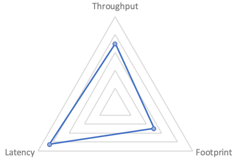
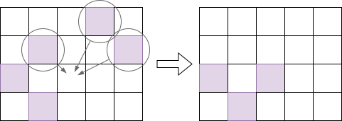

JVM G1GC 小册子
最近在看中村成洋的《深入 Java 虚拟机 -- JVM G1GC 的算法与实现》，把 G1 算法介绍得比较明白。这本书算是读书笔记，也算是教程，把自己之前的理解结合书里讲解的内容，重新表述，进而增进自己的理解，也算是在践行费曼学习法。
有很多看书时认为理解的内容，在写作过程中发现其实一窍不通，只能不断通过查其它资料、源码来增进自己的理解。因此读者如果时间允许，也欢迎像我一样写个教程来增进自己的理解。
GC 一直在不断发展，一些机制、源码都在不断更新。《深入 Java 虚拟机》里的一些内容也已经过时，本书的一些内容基于对 OpenJDK 11 源码的理解做了更新。当然这些内容可能在最新的 JDK 中也已经有了变化，这点也请读者注意。
另外由于我并不是专业做虚拟机的，对 GC 中一些机制的理解难免有误，欢迎批评指正。
G1 简介
一个 GC 实现通常需要关注三个方面1：
- 吞吐(Throughput): 单位时间内能回收的内存，越大越好
- 延时(Latency): GC 里主要关注的是 GC 的停顿，越小越好
- 资源占用(Footprint): GC 需要额外占用的内存、CPU，越小越好
吞吐越高，延时越大；低延时一般需要分阶段并行跑任务，占用更多资源；减小资源占用，如减少内存则需要更多的时间来换空间。可以用雷达图表示一个 GC 算法的侧重点（示例）：
可预测性
实时处理很多时候会与“高速性”相关，但是，高速性其实只是实时处理的特征之一。对于实时处理来说，真正重要的特征是“可预测性”。2
在刚接触 G1 时听到的说法，G1 只需要调一个参数：目标停顿的时间。本质就是设定对停顿时间的预期。
尽管因为算法实现、程序负载等多方面的因素，G1 的停顿并没有办法 100% 在目标时间之内，但它内部采用了许多手段来尽力达到“停顿不超过目标时间”这个预期。包括收集并预测 GC 各个阶段的运行时间、延迟执行 GC、拆分 GC 目标等，来实现“软实时性”3。
从上面的三象限来说的话，G1 是个平衡的算法，从 JDK 9 开始，就成为了 JDK 的默认 GC 算法。JDK 后续版本也引入了一些低延时的算法，如 ZGC、Shenandoah GC，但它们都牺牲了吞吐，会占用更多 CPU 资源，并且也缺少 G1 这种以“可预测性”为目标做的优化。
分成区域实现细粒度回收
通常把内存认为是一个连续的数组，基于分代的 GC (generational GC) 虽然把大片内存分成了几个部分（如 Eden, Survival, Old 等)，但在每个部分内还是当成一大片内存在处理。
G1 则不同，它会将内存划分成大小相等的区域(region)。用户可以随意设置区域的大小，但 G1 总会向上取整到某个 2^n。分配内存时，如果某个区域满了，则会通过空闲链
(free list)表找到下一个空闲的区域。使用空闲链表来管理空闲内存这招，其它算法也一样使用。如下图：

把内存分成区域是实现可预测性的重要手段，分成多个区域后，可以实现“增量 GC”，每次只回收一部分区域，来控制 GC 的停顿时间。对比 CMS 一次 Full GC 必须回收整个内存，如果内存较大，停顿时间一定会长，而 G1 可以选择性地回收一部分，分多次停顿。本质上是把回收的粒度打得更细了。
垃圾回收 = 识别 + 回收
下面简单介绍 G1 的整体流程，包含下面两个主要流程：
- concurrent marking（并发标记）。在尽量不暂停 mutator4 的前提下标记出存活对象5，还需要记录每个区域存活对象的数量，这个信息 evacuation 时会使用
- evacuation（比较难翻译，有翻译成“迁移”或“转移”的，这里保留英文）。负责将还存活的对象复制到其它空闲区域，将待回收的区域重新标记为空闲。
要注意的是，并发标记与 evacuation 是相互独立的，就算最新的标记任务做到一半， evacuation 还是可以利用之前的标记结果做回收的，毕竟 G1 每次回收并不会回收所有区域。（后续章节会讨论更多细节）
再以一个图来表达 evacuation 的内容：

紫色的是使用中的区域，evacuation 开始时，会从中选择一个或多个区域进行回收。回收时将区域中的活动对象复制到某个空闲的区域中。注意这个过程也起到了“压缩” (compact)的作用，所以它不会出现 CMS 出现的碎片化问题。
摘自中村成洋的《深入 Java 虚拟机》, p3
“硬实时”指的是如果超出某个时间，会发生严重后果，如手术机器人。“软实时”则表示要求虽然很高，但偶尔超出几次也没关系的情况
这个词是 Dijkstra 创造的，把它理解成应用程序就行。
目标是找出所有的垃圾，但我们做的是反向筛选，找出所有“非垃圾”，剩下的就是垃圾了，这个逻辑挺有趣的
引用自 https://plumbr.io/handbook/garbage-collection-in-java
并发标记
本章比较长，请耐心阅读。主要介绍并发标记算法的各个步骤和细节。
什么是并发标记
前面我们提到 垃圾回收 = 识别 + 回收，并发标记就是识别的部分，需要识别出内存里有哪些对象还存活，哪些对象已经没用了，可以回收。
标记与 GC Roots
首先有一部分对象我们会认为肯定还活着，一般称为 GC Roots，例如线程堆栈上的变量，如传入方法的参数，创建的临时变量等；例如系统加载的一些类等等1。
已知 GC Roots 必不可能是垃圾，那么从 GC Roots 引用的对象，必不可能是垃圾。因此并发标记中的“标记”，本质上就是从 GC Roots 出发，递归遍历所有引用的对象，把它们标记为“live（存活）”，这样没有标记到的就是垃圾，可以被清除。
标记与三色算法
标记本质是在做树/森林的遍历，遍历每一个“可达”的对象，遍历过程中有三个状态，为了方便讨论，通常用三种颜色对应三个状态：
- Black（黑）: 对象被访问了，且对象发出的引用都加入遍历队列。之后标记程序不会再访问该对象
- Grey（灰）: 对象被加入了遍历队列，但还没有被标记程序访问。标记程序之后会访问它
- White（白）: 标记程序还没有感知到它的存在，可能是还没遍历到，也可能是它本身不可触达
在下面的讨论中我们会用这些概念来讨论一些扫描机制的边界条件，但记住颜色的说法只是方便讨论遍历中节点的不同状态而已。下面再来张图方便直观理解遍历过程：

细节实现上，上图展示的是宽度搜索，但标记本身并不依赖具体的实现。G1 的实现有点像是宽搜和深搜的复合版本，以平衡效率和空间占用。实现的方式可以参考论文《A generational mostly-concurrent garbage collector》。
并发与 SATB
上一章提过 GC 算法的其中一个目标是减少停顿2，这里的停顿指的是应用程序的停顿。但像标记的工作，要扫描的存活对象客观上就有那么多，可能就算砸锅卖铁也需要那么长的时间，怎么减少停顿？其中一个想法是“并发”3，应用程序工作的同时，拿部分资源做 GC 的事，而不需要将应用程序暂停。
那么代价呢？
- GC 吞吐变差。如果完全停顿，GC 可以砸锅卖铁用所有资源，现在单位时间内只能用部分资源，GC 的吞吐必然变差
- GC 实现更复杂。例如三色算法，考虑的是“静态”的引用树，但在并发模式下，标记到一半时，树的结构可能发生变化，于是算法得有相关的实现来处理这些情况。
吞吐问题是效率问题，基本只能靠不断优化算法与实现细节。引用结构变化问题是正确性问题，目前有多种解法，G1GC 采用的是 Snapshot At The Beginning(SATB) 的解法4。核心思想是：标记开始前对当前的引用树做个快照，本次标记只对快照负责，对快照后变为垃圾的对象视而不见（这些垃圾也被称为浮动垃圾 floating garbage，会在下次 GC 时被回收）。
标记位图
要把对象标记成“存活”或“垃圾”，这个标记放哪？
我们知道 Java 的每个对象有对象头（object header），一种想法是在对象头里拿一个 bit 来记录这个信息，但这种做法从各种角度都不太好，如需要访问的内存散落各处，对缓存不友好；难以处理并发访问的一些情况；创建子进程时对内存的修改会触发操作系统的 Copy on Write 机制，容易浪费内存。
G1GC 使用的是标记位图，可以类比成为现实世界创建一张地图，标记的时候只在地图上标记，可以解决上面说的相关问题。位图需要占用额外的内存，但大小有限，例如每个对象大小是 8 字节，一个对象只需要 1 bit 标记，于是标记位图大小只需要内存的1/64 即可。
另外，要实现上面提到的 SATB 快照也需要额外记录一些信息，因此 G1 实际上需要记录这么一些内容：

bottom 指针指向区域的开始，top 指向区域内空闲空间的开始。prev 和next代表的是标记位图。额外地还有 TAMS(Top at marking start) 指针，记录的是标记开始时 top 的值，也分 prevTAMS, nextTAMS 两个版本，是实现 SATB 快照用的。
注意到位图和 TAMS 都有 prev 和 next 两个版本，这里 prev 版本是上一次标记的结果，而 next 版本记录的是本次进行中的状态5。TAMS 作用是做 SATB
的快照，对引用树做快照肯定不能复制一份内存，G1 的做法是在标记开始时将 top 值记录为 nextTAMS，本次标记只处理 [bottom, nextTAMS] 之间的对象，同样地回收时只回收 [bottom, prevTAMS) 间的对象6。由于 mutator 并发执行，标记过程中如果创建新对象，top指针会增加，而在 [TAMS, top] 之间的对象，都当作是存活的对象。
并发标记整体步骤
注意下文介绍的步骤和《深入 Java 虚拟机》一书里介绍的不一样，这里采用了 Oracle 教程 的说法。
- 初始标记 (Initial Mark)。标记 GC Root 能直达的对象，STW
- 根区域扫描 (Root Region Scan)。标记所有从 root region 可达的对象，在 G1 里特指 Survivor 区域。该步骤是为了处理标记与 evacuation 并发执行引发的一些问题。不需要 STW，但需要在下次 evacuation 前完成
- 并发标记 (Concurrent Mark)。使用三色算法标记所有可达的对象。与 mutator 可并发执行
- 最终标记 (Remark)。在步骤 ②、③ 中 mutator 可能更改了对象的引用关系，这些关系用 SATB 写屏障做了记录，该步骤会扫描这些记录并做标记。STW
- 收尾工作 (Cleanup)。主要包含几部分
- 存活对象计数。统计每个区域的存活对象信息，供 evacuation 使用。STW
- 清理 Remembered Sets(RSet)。STW
- 释放空区域。并发执行。
可以看到步骤很复杂，包含了很多细节。对于初次了解来说可以简单理解成标记过程中有一些不得不 STW 的操作，于是把三色算法拆成了 “停顿 -> 并发 -> 停顿 -> ...” 这样的步骤，之后再理解为什么不得不停顿。
① 初始标记 (Initial Mark)
初始标记是用来标记 GC Root 能直达的对象，需要 STW 。下图展示了初始标记的操作：

GC 线程首先会创建标记位图 next，再将 nextTAMS 置为当前 top 的值。另外由于标记阶段只处理 [bottom, nextTAMS) 之间的对象，因此 next 位图的大小也与top对齐，大小为 (nextTAMS - bottom)/8。
Initial Mark 阶段会扫描所有的 GC Root，将 GC Root 直接引用的对象标记为灰色（加入待遍历的队列），如上图中的对象 C。这个步骤称为根扫描(Root Scan)。
这个过程是 STW 的，如果根扫描的过程中根被 mutator 修改了，这种情况很难处理。虽然 G1GC 中使用写屏障（write barrier）可以感知对象的修改，但大多数根并不是对象，无法用写屏障感知，因此需要暂停 mutator 的执行。
另外实现上，Initial Mark 阶段其实是触发一次 Young GC（在 G1 中称为 Fully Young Evacuation），在 Young GC 对 GC Root 扫描的过程中顺便做标记。因此在文档上，会说 Initial Mark 这个操作是 "piggy-backed"（趴在猪上，搭载的意思）。
② 根区域扫描 (Root Region Scan)
这个阶段是对算法实现的一个优化7，对理解算法没有太大帮助，并且需要一些后续章节的知识才能理解，可以考虑先跳过，后续再回头看（不理解官方文档为什么要放在这里）。
我们知道标记和 Young GC 可以并发执行，如果并发标记进行到一半，Young GC 开始执行，那么 Young GC 除了复制存活对象外，还需要维护标记相关的状态，如更新新老区域对应的标记位图，在标记队列中的对象也需要做更新。实测下来很耗时间8。要理解哪些可以优化，需要先剧透一些信息。
GC 做回收的时候，还是会自己扫描对象引用的，并不会直接复用标记的结果。由于 G1 每次只回收部分区域，如果扫描引用需要扫描整个堆，就太浪费时间了，所以 RSet 就是其中一个优化，只需要找到需要回收区域的 RSet，就能知道有哪些区域引用自己了。
但问题还没解决，即使通过 RSet 找到了引用自己的区域，怎么知道这些区域里哪些对象是活着的？这就是并发标记要解决的，标记能回答，在 TAMS 前的对象都标好了，TAMS之后的对象都当成是活的。因此可以理解为，标记只是为回收提供“额外 root”信息的。
另外由于不管是 Young GC 还是 Mixed GC，Eden 和 Survivor 的所有区域都会被回收，所以这些区域的 mark 信息本质上是没用的，因为 evacuation 时本来就会扫描它们中的所有对象。于是可以推论标记的产出，是 Old Gen 里不被回收的区域中对象的存活信息。
而我们知道 Young GC 只回收 Eden 和 Survivor，过程中需要维护标记信息是防止移动 Eden 和 Survivor 的对象导致扫描出错。那只需要在并发 Young GC 发生之前，就把 Young Gen 的对象都扫完就行了。扫完后 Young Gen 发生的事都跟并发标记无关了。
由于 Initial Mark 本质上是做了一次 Young GC，可以认为 Initial Mark 快照时， Eden 是空的，所以在下次 Young GC 前，只需要扫完 Survivor 区即可。这个过程被称为根区域扫描，而 Survivor 区也是目前唯一的根区域。
③ 并发标记 (Concurrent Mark)
并发标记阶段是用三色算法递归遍历所有引用的过程。另外由于 mutator 也在并发执行，因此需要处理 mutator 修改的引用。
下图表示的是并发标记结束后区域的状态，对象 A 和 E 都被标记了。对于 E 这种占用多个标记位的对象，只有起始位会被标记。在标记过程中，对象 J、K 是新创建的，在 SATB 的机制之下，它们会被认为是存活对象，标记过程完全不会处理它们，只是在 evacuation 使用标记时，会把它们当作是存活的对象。
标记遗漏问题
mutator 与标记并发执行，可能引发两种问题：
- 新增对象，从步骤 ① 中标记的 GCRoot 出发不一定可达，这点在 SATB 中通过
nextTAMS解决 - 引用修改，同时满足下列两个条件的修改会造成正确性问题
- 应用线程增加了一个 Black -> White 的引用
- 同时应用线程断开了 Grey -> White 的(直接或间接)引用
第二个问题如下图所示：

考虑处于图 (a) 状态时标记暂停，此时 mutator 执行 (b) 增加了 A->C 的引用，再执行 (c) 操作断开 B->C 的引用。此时标记继续，虽然对象 B 在标记队列里，但此时 B->C 的引用已经断开，因此从 B 对象出发不会对 C 做标记，而，由于在步骤 (a) 时 A 出发的引用都扫描过了，所以 A 已经标黑，于是后续的标记过程都不会再访问 A，于是也不会从 A 出发对 C 做标记。导致对象 C 被标记遗漏了。
SATB
对以上两个标记遗漏问题，G1 中使用 SATB(Snapshot At The Beginning) 的机制：
- 对于新增对象，上面提过，在标记开始时将
top的值记录为nextTAMS，大于nextTAMS的对象肯定是标记开始后新增的，无论它们实际是否存活，都认为是存活的。 - 对于引用修改问题，SATB 引入了 SATB 写屏障，在 mutator 对引用做修改时，记录赋值前的对象（即上例中的对象
C），并把它们标记成灰，防止遗漏。
这两个操作从效果上等价于在标记开始时给所有旧的引用做了快照，标记只对快照的引用关系进行，而对快照后发生的引用修改视而不见，因此称为 SATB。
SATB 专用写屏障
所谓的“写屏障”，指的是应用程序的 Java 代码里，对象的域上发生了任何的修改，都额外执行一段代码，SATB 专用的写屏障执行的伪代码如下（后续会介绍 G1 还有维护 RSet 用的写屏障）：
1: def write(field, new_val):
2: satb_write_barrier(field)
3: *field = new_val
4:
5: def satb_write_barrier(field):
6: if $gc_phase == GC_CONCURRENT_MARK:
7: old_obj = *field
8: if old_obj != NULL:
9: enqueue($current_thread.satb_local_queue, old_obj)
当执行 obj.field = new_val 时执行 write 方法，注意到satb_write_barrier并不需要知道 new_val 的值，但它由于它需要记录修改之前的值，因此需要在第 3 行之前执行，因此这个写屏障也叫写前屏障（pre-write barrier）。
第 6 行 用来判断当前是不是处于并发标记的阶段；第 8 行判断 old_obj 是否为NULL，如果是 NULL 则不做任何处理；第 9 行在 old_obj 不为 NULL 时将其加入到当前线程自己的 satb_local_queue 中。因为目的是对 old_obj 发出的引用做标记，如果是
NULL 就没有什么可标记的了。
另外注意，把一个对象标成灰需要做两件事，在位图上做标记，同时将对象加入标记队列中，上面的算法只加入队列并没有处理位图，这点与原版的算法（称为汤浅算法，由汤浅太一于 1990 年开发）不同。位图的处理会由其它线程完成，写屏障由 mutator 执行，减少写屏障的开销能减少 mutator 的负担。
SATB 队列
一个功能如果涉及多线程，都要考虑同步带来的开销，SATB 的实现也是如此。SATB 没有使用一个全局的大队列，而是每个 mutator 线程各自持有自己的队列，在本地队列装满后（默认大小 1KB），会被添加到全局的SATB 队列集合中。这些队列里的对象，可以认为都是灰色的待标记的对象9。

并发标记阶段，GC 线程会定期检查 SATB 队列集合的大小，如果发现有队列，则会对队列里的对象进行标记和扫描。另外对 SATB 队列的处理，优先级会比常规的三色标记更高，毕竟 SATB 队列占了额外的资源，应该尽快处理，而其它引用关系都在堆里，都是“死”的。
SATB 写屏障与多线程执行
这是《深入 Java 虚拟机》第 2.5.3 一节中额外提到的一个正确性疑问，对于理解 SATB 中的不变性（invarient）有帮助。考虑上面写屏障的代码（按书里的样例重写了）：
1: def satb_write_barrier(field, new_val):
2: if $gc_phase == GC_CONCURRENT_MARK:
3: old_obj = *field // ①
4: if old_obj != NULL:
5: enqueue($current_thread.satb_local_queue, old_obj) // ②
6: *field = new_val // ③
注意到写屏障的代码中从 ① 到 ③ 没有加锁的操作，那考虑下面的场景：
*field的值是obj0（的地址）t1（线程 1）想在*field中写入obj1t2（线程 2）想在*field中写入obj2
现在考虑这样的执行顺序：
t1执行 ①：old_obj = obj0t2执行 ①：old_obj = obj0t1执行 ②：将obj0添加到 SATB 队列t2执行 ②：将obj0添加到 SATB 队列t1执行 ③：*field = obj1t2执行 ③：*field = obj2
最终 *field 的值为 obj2，但我们发现 t1 中途写入的 obj1 并没有被加入到
SATB 队列中，这会不会导致标记遗漏呢？
实际上并不会，我们先逻辑视角来看，SATB 只负责处理快照前的引用关系，要保证快照前可达的对象，即使 mutator 修改了引用也能被正确标记，这也是写屏障关心修改前对象的原因。那么对于 field 来说，之前可达的只有 obj0 这一个对象，因此只要保证obj0 进队列就可以了。而 obj1 是快照后新增的引用，原则上就是不需要处理的。
当然逻辑上的道理不一定能说服我们，我们考虑实际实现。我们要执行 obj3.field = obj1时，obj1 肯定也是被某个指针引用的，不管它是栈上的临时变量，还是另一个对象的域。我们假设它是 obj4.field，于是上面的过程引用关系变化如下图：
整个过程中，SATB 保证了 obj0 标灰，那 obj1 呢？obj1 还被 obj4 引用着，不管当前 obj4 是白还是灰，最终都能访问到 obj1，但这都跟 obj3 没有关系了。如果后续 obj4 断开了和 obj1 的引用，obj1 也能被对应的写屏障捕捉，标成灰色，但同样的，也跟 obj3 无关了。
④ 最终标记 (Remark)
如果理解了 SATB 机制，那么最终标记要做什么也很容易理解了。SATB 写屏障队列的处理和标记过程是并发的，那么总需要有一个时机“扫描残留的 SATB 本地队列”，而要清空队列就要保证此时没有新的修改，于是需要暂停 mutator，所以这是个 STW 的过程。
如下图，扫描完 mutator 的本地 SATB 队列后，对象 G，H 也会被标记，且它们的引用 I 也会被标记。

Remark 阶段结束后，所有存活对象都被标记，不带标记的对象都认为是垃圾了。
另外实现上 Remark 阶段还会做一些额外的操作，如弱引用处理（reference processing）、类卸载（Class Unloading）、释放空的区域、重建 RSet10 等，但这些都是实现细节，这里不展开。
⑤ 收尾工作 (Cleanup)
从 Oracle 的文档来看，收尾工作有这么几个11：
- 存活对象计数。统计每个区域的存活对象信息，供 evacuation 使用。STW
- 清理 Remembered Sets(RSet)，标记阶段能确定一些空区域，它们的 RSet 可以清理。STW
- 释放空区域。并发执行。
下面我们主要介绍存活对象计数，以及上面没提的，为下一次标记做的准备。
存活对象计数
标记是为回收服务的，在 G1 的回收阶段，有一个重要决策是判断回收哪些区域的性价比更高。而这就依赖标记阶段提供关于区域有多少存活对象的信息。
这个步骤会扫描各区域的 next 标记位图，统计区域内存活对象的字节数，然后存入区域内的 next_marked_bytes，看名字也能想到，那肯定也有对应的
prev_marked_bytes 字段，它们和 next, prev 类似，一个代表进行中，一个代表已完成。
下图中存活的对象有 A, C, E, G, H, I，因此统计共得 56 字节。这里对象 E 虽然在标记位图里只有一个 bit 标记，但计算大小时要按对象大小 16B 计算。在 [nextTAMS, top) 间的对象隐式地被作为存活对象，不需要在这里单独计数。

准备下一次标记
前面提到标记位图，TAMS 指针、marked_bytes 都有两份，其中 prev 代表（上次）已完成的状态，next 代表标记中的状态，现在标记结束了，需要将 prev 的值置为
next，并重置 next，如下图：
总结
标记阶段最终有两个主要的产出
prev标记位图 +prevTAMS，用于有哪些对象是存活的prev_marked_bytes用于每个区域有多少存活对象，后续 evacuation 选择区域使用
而理解并发标记，最重要的是理解标记遗漏问题以及 SATB 机制，这些都在文章里介绍了。
推荐阅读
- GC Algorithms: Implementations plumbr.io 的 GC 教程，对 G1 算法有很详细的描述
- Getting Started with the G1 Garbage Collector Oracle 的官方教程
- Concurrent Marking in G1 JDK 开发 Thomas Schatzl 写的关于并发标记的文章
Garbage Collection Roots Eclipse Memory Analyzer 总结的
在本书中，没有特别说明的情况下，“停顿”（Pause）都指的是 stop the world 停顿
注意并发与并行的区别，这里不多做讨论，请读者自行查阅相关概念
还有一些其它做法，如 CMS 中使用的是 incremental update
JDK-6888336 里的 comment 有更详细的描述
JDK-8210708 这个优化后，next bitmap 不复存在，这个修改会进 JDK 20
细节上回收时 [prevTAMS, top) 间的对象也是可能被回收的，这个后续会讨论，这里这个说法不影响算法的理解
JDK-7112743 提到 26G 内存，18 个 worker 下花了近 1.8s。
实际上 write barrier 可能会记录 TAMS 之后的对象，这些对象后续处理里可以丢弃
JDK-8180415 在并发标记阶段重建 RSet，进入 JDK 11
本人看 JDK 源码经验尚浅，如有错误，欢迎指出
实际看 JDK 11 源码，发现实际实现跟文档里说的内容差异比较大，不确定是不是文档和版本不同步。例如这里说的几个步骤，其实都算在 Remark 阶段，而实际的 CleanUp 只包含 RSet 重建的内容。另外对 bitmap 的重置和 TAMS 的重置也不在一起执行。
Evacuation（转移）
Evacuation 直译是“驱逐”，作用是把所选区域内的存活对象转移到空闲区域，之后被转移的区域只剩下死亡的对象，可以被释放，可以类比成标记复制里的“复制”阶段。
G1 里的转移
为了更好地理解下面提到的一些机制的作用，我们先对 G1 转移有个整体的理解。
G1 转移时只会处理部分区域，通常称为回收集合（Collection Set，简称 CSet），下图里区域 B 和 C 就是 CSet。回收时，GC Root 直接可达的对象 h，以及间接可达的 f 和 i 都会被复制到空闲区域 D，复制时，相应的指针也会指向新的对象。转移后，CSet 里剩下的对象都是垃圾，最后把 CSet 释放即可。

这张图隐藏了两个细节，它们是理解 G1 evacuation 的重要前提：
- C1 在判断 CSet 里的对象是否存活时，并不会利用并发标记的位图，而是自己重新从根集合进行扫描，这点与 CMS 不同，要特别注意
- 判断 CSet 中对象是否存活，除了查看 GC Root 的引用外，也需要判断是否存在非 CSet 区域中存活对象的引用（上图的区域
A），判断非 CSet 区域中对象是否存活，则不再从 GC root 递归扫描，而是直接利用并发标记的位图，且也会考虑区域里的TAMS
另外 G1 的实际实现是包含分代处理的，我们先把本章说的算法当成是纯的 Mixed GC/Full GC 来理解。
记忆集合（Remember Set）
上文提到，G1 在判断 CSet 里的对象是否存活时，除了扫描 GC Roots，也会扫描非CSet
区域里其它对象对本区域的引用（如上节图中扫描区域 A 发现对象 b 引用了 f）。
但是，回收的区域只占整个堆的小部分，如果需要扫描所有的非 CSet 区域，那不就等价于把整体堆重新标记了一遍？所以为了提升效率，我们需要空间换时间。记忆集合（Remember Set，简称 RSet）就是这样一个结构，帮助我们快速判断：对于区域 X，有哪些其它区域“可能”包含引用了本区域内对象的对象。
做个类比，比如上学时你在 1 班，2 班的小明，5 班小刚都欠你钱。你可以记个帐本，里面写 2 班/小明，5 班/小刚，这个帐本是精确到人的。如果欠钱的人特别多，帐本记不下，于是简化成只记班级 2 班，5 班，收钱的时候就挨个问对应班级的同学“你是不是欠我钱”。但如果每个班欠钱的只有几个，收钱时却要询问全班的人，很浪费时间。于是可以优化帐本上，记到某班某组：2 班/1 组，5 班/3 组，这样收钱时不需要问全班人，只需要问一个组的人就行了。
记忆集合 RSet 就是这个帐本，班级就是区域，而班级里的“组”就是下面要介绍的“卡表（Card Table）”。
卡表（Card Table)
逻辑上，我们把一段内存空间按 512B1 切成小块，每个块我们用 1B 的空间记录一些关于这个块的信息，如最近这块内存里有没有修改。实现上我们用一个数组来记录块信息，这个数组就称作卡表（Card Table），数组的元素就称为卡片（Card）。

因为空间的划分是固定大小的，所以要定位一个对象所在的卡表的索引，只需要计算
(objec_address - heap_start) / 512 即可。另外由于卡片大小是 1B，可以记录很多状态，本章中只关心两种：
- 净卡片（clean）
- 脏卡片（dirty）
RSet 的结构
每个区域都有一个 RSet。一个 RSet 是一个哈希表，记录的是“X 区域的 Y Card 里可能有对象引用了当前区域的某个对象”。表的 Key 是 X 区域的地址，表的Value 是X 区域的某干个 Card 索引，如下图所示：

可以看到 RSet 记录的粒度只到 Card 级别，那具体 Card 里哪个对象引用了当前区域的哪个对象？这部分信息 RSet 给不出，因此在 evacuation 时，需要扫描 Card 里的所有对象才行。但是相比于扫描整个堆，这个工作量已经小得多了。
RSet 写屏障
上面我们理解了如何使用 RSet 来帮助我们扫描根集合，那 RSet 的信息是如何更新维护的呢？和 SATB 的维护类似，RSet 也是使用写屏障来维护的，但不同于 SATB 中的 pre-write barrier，RSet 需要使用 post-write barrier，因为更新 RSet 需要使用的是修改后的值。RSet 写屏障伪代码如下2：
1. def evacuation_write_barrier(obj, field, newobj):
2. check = obj ^ newobj
3. check = check >> LOG_OF_HEAP_REGION_SIZE
4. if newobj == NULL:
5. check = 0
6. if check == 0:
7. return
8.
9. if not is_dirty_card(obj):
10. to_dirty(obj)
11. enqueue($current_thread.dirty_card_queue, obj)
12.
13. *field = newobj
这份伪代码不能很好地展示为什么叫 post-write barrier，但大体逻辑正常看，有几个注意点：
第 2 行到第 7 行，是在检查 obj 和 newobj 是不是在同一个区域，如果 obj
和 newobj 在同一个区域，则它们的高位相同，于是第二行的 XOR 操作得到的结果就会是 0，于是通过第 6 行的 if 语句。
第 9 行要注意引用的方向，因为要执行的是 obj.field = newobj，是 obj 引用newobj，所以更新 RSet 的时候，是要往 newobj 的 RSet 里加入 obj 的 card。第 9 行的判断如果通过，则会把 obj 对应的 Card 标成 dirty，并将 obj 加入
RSet 日志队列 dirty_card_queue 中。
这里的 dirty_card_queue 和 SATB 队列机制基本一样，也是每个线程本地有个队列，如果本地队列满了就添加到全局队列中，有专门的维护线程来处理队列里的元素。队列的元素是 Card 的索引。如下图：

DirtyCardQueueSet 维护线程
DirtyCardQueueSet 维护线程会与 mutator 并发执行，作用是消费 DirtyCardQueueSet 集合并更新RSet。具体来说是这么几件事：
- 从 DirtyCardQueueSet 中取出 DirtyCardQueue，并从头开始扫描
- 每次取出一个 Card Index，先把对应的 Card 标记成 clean
- 扫描 Card 中的所有对象中的引用
- 在引用所在区域的 RSet 添加当前 Card
步骤如下图：

DirtyCardQueueSet 集合中的数量超过阈值（默认为 5）时，维护线程启动，直到数量降低至阈值的 1/4 以下。
另外要注意，整个 RSet 的维护机制，从逻辑上和并发标记毫无关系，是完全独立的机制。当然从实现上可以做一些优化，比如 JDK 11中 已经在标记阶段增加了重建 RSet 的步骤。
热卡片
如果有某个 Card 中的对象会频繁修改，我们把这样的 Card 称为热卡片（hoto card）。热卡片会频繁被加入 DirtyCardQueue，也会维护线程频繁处理，增加空间和时间的消耗，因此需要特殊处理。
G1 会维护一个计数表，记录从上次 evacuation 以来，哪些卡片变成 dirty 过，及对应的次数。当一个卡片被标记为 dirty 时，如果它的计数超过了阈值（默认是4），则会被加入热队列的尾部，加入热队列的卡片不会被 DirtyCardQueueSet 维护线程处理，在evacuation 时会单独处理。另外热队列的大小是固定的（默认 1KB），如果队列满了，会从队列头部取出较老的 Card，把它作为普通 Card 处理。
evacuation 步骤
有了 RSet 的信息 evacuation 的步骤就比较清晰了：
- 选择要回收的区域，即 CSet。这个步骤会利用并发标记里统计的存活计数信息
- 根转移。这里指的是 CSet 里被根集合（GC Roots 及不在 CSet 中的区域中的对象）直接引用的对象
- 其它对象转移。指以 #2 为起点，扫描所有的可达的子孙对象并转移
整个 evacuation 都是 STW。
① CSet 选择
G1 是 Garbage First 简称，说的是 G1 会优先回收垃圾。另一方面 G1 需要尽可能满足用户设定的目标停顿时间，因此 G1 的做法是：
- 记录每次回收的一些时间信息，在并发标记结束时会计算每个区域的转移效率（GC efficiency），并按转移效率从高到低排序
- CSet 选择时，会按排好的顺序依次计算回收该区域所需时间的预测值，直到 CSet 回收的总时间预测值快要超过用户设置的目标停顿时间为止
第一步里换转移效率排序反映了“Garbage First”，而第二步里则是实现用户设定停顿时间的具体方法。
转移效率的计算公式是 可回收的字节数 / 转移所需时间，代表“单位时间可回收的字节数”，通常一个区域存活数量越多，可回收字节数越少（容易理解），同时转移所需要的时间也越多，因为对象复制的时间越长。可以简单地理解成垃圾越多的区域，转移效率越高。
② 根转移
根转移的对象包括这么几类3：
- 由 GC Roots 直接引用的对象
- 由非 CSet 区域中存活对象直接引用
根转移的伪代码如下4：
1. def evacuate_roots():
2. for r in $roots:
3. if is_into_collection_set(*r):
4. *r = evacuate_obj(r)
5.
6. force_update_rs()
7. for region in $collection_set:
8. for card in region.rs_cards:
9. scan_card(region, card)
10.
11. def scan_card(region, card):
12. for obj in objects_in_card(card):
13. if is_marked(obj) or obj >= region.prevTAMS:
14. for child in children(obj):
15. if is_into_collection_set(*child):
16. *child = evacuate_obj(obj)
其中第 2 行到第 5 行是扫描 GC Roots，如果引用的对象在 CSet 中则做转移操作。容易理解。
第 6 行 force_update_rs 是将 DirtyCardQueue（包括本地和全局队列）中还未处理的 Card 做扫描，当然还包括热卡片队列中的 Card。
第 7 行到第 9 行是通过遍历 RSet 来扫描由非 CSet 区域中存活对象对本区域的引用。
第 11 行开始是扫描 Card 里的对象。注意第 13 行，在具体扫描 Card 时，会判断一个对象是否有标记，这个好理解。另一个条件是它是否在prevTAMS 之后，这个条件就是
SATB 的假设，如果地址在 prevTAMS 之后，则隐式认为该对象是存活的。
evacuate_obj
具体转移某个对象的逻辑会比较复杂，除了复制对象本身，还需要做比较多的信息维护，步骤如下：
- 将对象
a复制到空间区域，记为a' - 将对象
a的对象头修改成a'的地址，这个指针也叫 forwarding5 指针 - 遍历
a'的所有字段，如果字段指向 CSet 内，则将字段的地址加入转移队列中 - 针对
a'字段的引用，如果不在 CSet 内，则需要更新对应区域的 RSet - 针对引用方（如
d.field2），需要更新a'所在区域的 RSet，增加d.field2所在的Card - 更新引用方指针的值（
d.field2），置为复制后的地址a'
可能参考下图，可能更直观6：

对应的伪代码如下7：
1. def evacuate_obj(ref):
2. from = *ref
3.
4. if from.forwarded:
5. to = copy_to_survivor_space(from)
6. else:
7. to = from.forwarded
8.
9. *ref = to // ⑥
10.
11. if !in_same_region(ref, to):
12. update_rs(ref, to) // ⑤
13.
14. def copy_to_survivor_space(from):
15. to = allocate($free_region, from.size)
16. copy_data(from, to, from.size) // ①
17. from.forwarded = to // ②
18.
19. for child in to.children:
20. if is_into_collection_set(*child):
21. enqueue($evacuate_queue, child) // ③
22. else:
23. update_rs(child, *child) // ④
24.
25. return to
26.
27. def update_rs(from, to):
28. from_region = region_of(from)
29. to_region = region_of(to)
30. push(card(from), to_region.rs_cards)
参数 ref 是引用方，第 2 行得到的 from 是待转移对象。
第 4 行到第 7 行会首先判断 from 对象是否已经转移过，如果转移过就读取
forwarding 指针指向的对象，即目标区域的对象。forwarding 指针是指原对象 a 的对象头的内容改写成了 a' 的地址，而由于对象的地址会对齐到“字”，所以可以用其中的一个比特来标记它是 forwarding 指针，因此不需要额外空间。
第 9 行是将转移后的对象地址赋给 ref 对应步骤 ⑥。
第 11 行和第 12 行对应步骤 ⑤，维护转移后对象 to 所在区域的 RSet，由于 RSet
记录的是跨区域的引用关系，所以有第 11 行的判断条件，如果在同一区域，可以跳过。
第 15 行到第 17 行对应步骤 ①、②，真正执行对象的复制，并设置 forwarding 指针。
第 19 到第 23 行是扫描对象的域，根据指向的对象是否在 CSet 里有不同处理，在 CSet 的加入扫描队列，不在 CSet 的则对应步骤 ④，需要更新对象所在区域的 RSet。
第 27 行的 update_rs 作用是更新 to 对象所在区域的 RSet，伪代码里写得比较直接，实际的实现视情况可能不会直接更新 RSet，而是都统一添加到 DirtyCardQueue 里，最后统一扫描。
另外注意第 20 行如果 child 指向 CSet，则会执行第 21 行，跳过 23 行，这并不意味着它的 RSet 就不需要维护了，后续在步骤 ③ 消费队列时还是会通过执行evacuate_obj执行到第 11 行来做 RSet 的维护。
③ 转移
根转移的过程中会把引用的对象加入转移队列（上节代码中的第 21 行），这个步骤里会消费转移队列，递归地遍历所有引用对象并转移。伪代码如下：
def evacuate_follower():
while !$evacuate_queue.is_empty:
ref = dequeue($evacuate_queue)
evacuate_obj(ref)
核心逻辑和根转移里相同，只是套了层壳来遍历队列。这个步骤结束后，所有 CSet内的对象都转移完成。
与 CMS 的区别
如果之前了解过 CMS 收集器，那么在学习 G1 时要注意与 CMS 的一些区别：
- CMS 在回收时会直接看标记的结果，只复制带标记的对象，而 G1 在转移时会自己重新遍历引用，标记只在 scan_card 时使用。
- G1 在 evacuation 时需要 STW，因为要修复引用的指针，而 CMS 在 Sweep 时不会移动对象所以可以并发。但是 Sweep 过程中如果新增对象则可能会被误杀（新对象没有标记），所以 CMS 内部会给 free list 加锁。但这样的话，Sweep 过程中 mutator 如果新建对象会卡住
- 标记时，CMS 解决标记遗漏，使用的是 incremental update 的机制，而 G1 使用的是 SATB 机制。所以看 CMS 时接触 Card 概念，是用在标记时处理 incremental update 的，而G1 的 Card 主要是在 evacuation 时使用，虽然作用类似。
- CMS Full GC 只回收 Old Gen，加上它是 Incremental Update 机制，导致在 STW Remark 时需要扫描所有根集合，此时所有的 Young Gen 也都隐式做为存活对象进行扫描。相比之下，G1 在 Remark 时只需要额外标记 STAB 队列即可，当然 G1 在 Evacuation 也需要扫描 Young Gen，但扫描的同时也会回收。
总结
G1 每次转移只会转移部分区域（称为 CSet），转移时会自己重新遍历引用而不是直接复用标记的结果。在判断 CSet 中的对象是否存活时，需要扫描“根集合”，根集合除了 GC
Roots 外，也包含了不在 CSet 区域里的对象。为了减少需要扫描的对象，G1 通过 RSet
来维护区域间的引用关系，于是只会搜索那些存在对当前区域引用的区域的 Card。在判断 Card 内的对象是否存活时，会利用并发标记的结果，以及 SATB 时做的 prevTAMS
信息。
转移的过程就是一个遍历“森林”的过程。在实际转移对象的过程中，除了对象的复制， forwarding 指针的维护外，还需要维护各种情况下 RSet 的正确性。
JDK 18 引入的 JDK-8272773 允许用户自定义 Card 大小
摘自书《深入 Java 虚拟机》第 3.3 节
在《深入 Java 虚拟机》中还包含一类“并发标记中处理的对象”，实际包含了 SATB 本地队列和全局队列中的对象，也包含在 $root 里。因为如果其中的对象转移了，队列里的指针也需要更新。但实际在 JDK 11 的代码里，做法是把
SATB 中任何指向 CSet 的指针都移除队列了。再配合标记中的根区域扫描，在 Young
GC 的 Evacuation 阶段，也就不需要把 SATB 队列中的对象作为根了。
摘自书《深入 Java 虚拟机》第 3.8 节，并做少量修改
后续如果顺着其它引用要转移 a 时，如果通过 a 的对象头发现它是 forwarding 指针，则会跳过转移，直接返回 forwarding 指向的新地址。另一方面不用担心 forwarding 指针占用空间，它只会在转移时存在，转移结束就会被释放，而转移又是 STW 的。
图摘自书《深入 Java 虚拟机》第 3.8.1 节，并做少量修改
这里的代码是参考源码写的，和书《深入 Java 虚拟机》第 3.8.1 节的代码不同
软实时性
本章介绍 G1 如何实现软实时性
调参选项
在介绍的时候说过，第一次接触 G1 时听到的说法是 G1 只需要调一个参数：目标停顿的时间。如果更细地话其实是 3 个：
- 可用的内存上限
- 目标停顿时间
-XX:MaxGCPauseMillis=200，默认是 200ms - 停顿间隔
-XX:GCPauseIntervalMillis，默认为MaxGCPauseMillis + 1ms
这三个参数其实是相互制约的。例如用户设定了停顿时间 1s，那如果 JVM 使诈，就可能停顿 1s，留给 mutator 1ms，再立马停顿 1s。表面看来停顿时间都满足了，但实际因为停顿太频繁导致 mutator 实际获得的执行时间太少了。
于是停顿间隔 GCPauseIntervalMillis 给目标停顿时间加了一个约束，它表示：在时间轴上任意划出一个停顿间隔，里面总的停顿时间不得超过设置的值。这实际上约束了，JVM 在任意停顿间隔内，需要给 mutator 预留至少 GCPauseIntervalMillis - MaxGCPauseMillis 执行的时间。例如目标停顿是 1s，间隔是 3s，下图里所有的停顿都是 1s，但间隔 B 里总的停顿时间超过了 1s，就破坏了这个约束。

但这样 JVM 又可以走极端，那我尽可能地把 GC 延迟不就行了，垃圾也不清理了。因此可用的内存上限又会限制最大可使用的内存，阻止 GC 的无限堆积。如果垃圾实在赶不上回收，G1 会退化成 Serial 回收器进行回收，此时就会极破坏目标停顿时间。
预测 evacuation 时间
为了完成用户设定的目标停顿时间，G1 的手段比较有限，主要有两个：
- 调整回收工作量以满足目标停顿时间，如调整 CSet 的数量，或者是 Young Gen 的区域数量
- 延迟回收以满足停顿间隔的要求
不管哪个目标，都需要（尽可能准确）预测回收工作需要消耗多少时间，G1 中使用下面的公式做预测：
$$ V(cs) = V_{fixed} + U * d + \sum_{r \in cs}(S * rsSize(r) + C * liveBytes(r)) $$
其中：
- \( V(cs) \) 代表预测回收 CSet 中所有区域需要的时间
- \( V_{fixed} \) 代表固定消耗
- \( U \) 代表扫描一张 Card 的平均消耗，\( d \) 代表转移开始时脏卡片的数目，转移开始时需要扫描所有脏卡片来保证 RSet 信息是最新的
- \( S \) 代表扫描一张 RSet 中 Card 的消耗，\( rsSize(r) \) 代表区域
rRSet 中总的 Card 数量 - \( C \) 代表回收一个字节(byte)的时间，\( liveBytes(r) \) 代表区域
r内存活对象的数量
其中 \( V_{fixed} \)、\( U \)、\( S \)、\( C \) 这些跟时间相关的参数都是变化的，跟算法的实现、机器的性能等等都有关系。因此 G1 处理的的方式是启动时先给个先验的定值，边运行边收集每次回收的相关数据，再根据这些数据动态修正这些变量的值。
其它的变量如 \( d \)、\( rsSize(r) \)、\( liveBytes(r) \) 这些跟数量相关的值，在一次具体回收时都可以统计得到。
最后一个变量是 cs，代表 CSet。G1 在标记时会按区域的回收效率从高到低排序，在决定 CSet 时，会依次尝试将新区域加入 CSet，直到加入新区域后，计算得到的 V(cs) 超过了用户设置的目标停顿时间为止，超出停顿时间的新区域会被剔除。
可信度
用户可以配置可信度 -XX:G1ConfidencePercent=50 代表的是对上述预测的信心。对于这个值的作用到现在我也还不太理解。从代码层面看它有两个影响：
- 做各种时间预测时，会计算
avg + confidence/100 * stddev1，信心越大预测出来的值越大 - 在做空间预测时，会以
bytes * 100 / confidence来预留，即信心越大，多预留的空间越小。
第二点容易理解，不理解的是第一点，为什么信心越大，预测出的时间越大？
我觉得“可信度”是失败的设计。这个参数功能上是给调整预测值留了个口子，但它的调整粒度太粗了。从业务上它映射的“可信度”这个概念是不合理的。用户凭什么来判断可信度是多少？预测的内容是跟代码和环境相关的，为什么需要用户来设置可信度？
暂停的调度
上面提的“预测”解决了单次停顿满足目标停顿时间的要求，在这基础上，还需要通过适当的调度策略来保证在任意指定时间间隔内的停顿时间不超出目标停顿时间2。
G1 在调度上拥有的手段只有一个：延迟停顿任务的执行。所以调度策略要做的，是判断一个新任务是“现在”执行，还是“等一会”执行，如果要等，等多久。
为了回答这个问题，G1 会维护一个队列，记录最近一段时间的停顿事件，队列的每个元素就是一个事件，每个事件只记录停顿的开始和结束时间。队列的元素个数是固定的，如果事件的数量过多，就会抛弃最老的事件。
考虑 G1 预测了下一次停顿时间，调度时会假设这次停顿“立即执行”，就能算出最近一次间隔的开始时间 X。接着就能计算出假设立即执行，在间隔内总的停顿时间。如果时间在允许的停顿时间内，就立即执行。如果超出了，则会尝试将 X 不断后移，直到以 X 开始的区间内总的停顿时间小于预期停顿时间，最后根据这个时间算出需要推迟多久，如下图：

并发标记中的暂停
并发标记也会按上节提到的调度逻辑进行调度，只是并发标记不像 evacuation 那样可以通过调整工作量来调整停顿时间。并发标记中有这么几项 STW 操作：
- 初始标记 (Initial Mark)。标记 GC Root 能直达的对象
- 最终标记 (Remark)。扫描 SATB 队列信息
- 收尾工作 (Cleanup)。统计存活对象，清理 RSet 等
由于标记的停顿时间没有办法调节，因此如果某个环节本身的时间已经超过了用户设定的目标停顿时间，那 G1 也无能为力了。
小结
G1 的这套机制还是较大的参考价值的：
- 从交互上允许用户设定目标停顿时间和间隔
- 手段上把任务拆成更细的粒度（回收区域），并通过控制数量来控制时间
- 为了决定数量，利用历史统计信息做预测
如果类比的话，项目管理中的排期也大抵是如此，把功能拆成小任务，估算每个任务的时间，考虑迭代的周期，反过来选择重要的功能和小任务。
JDK 中的对应代码：https://github.com/openjdk/jdk11u-dev/blob/master/src/hotspot/share/gc/g1/g1Predictions.hpp#L58
以我粗浅的数学知识，感觉 G1 简化了整体的问题难度，先设定单次任务停顿尽可能多，再来调度这个任务。但如果同时考虑优化单次任务的任务量以及任务调度的时间，可能难度会比较大。
分代（Generational） G1 GC
上面几节讨论 G1 GC 虽然偶尔提到分代，但整体还是尽量弱化了分代带来的影响。但其实 Java 中的 G1 GC，默认就是分代模式。下面介绍分代 G1 GC 带来的区别。
分代基础知识
分代 GC 基于这样的发现/假设：
- 多数对象一般创建不久后就被废弃了/死了
- 一段时间后还在使用/活着的对象，通常还会继续存在/活（非常）长的时间
从对象存活时间和对象数量的视角来看，分代假设就是这样的（原图）：
{kind=link}

当然这个假设不一定符合实际，比如 LRU 缓存，越老的对象越可能被淘汰。
分代的 G1GC
在分代 G1GC 中，区域会被分成两种，一种是年轻代区域（Young Gen），一种是老年代区域（Old Gen），分别代表分代里存活短和存活长的对象。而回收也有两种模式：完全年轻代 GC（Fully Young Collection），部分年轻代 GC（Partially Young Collection）也称为混合 GC（Mixed GC）。当然还有一种Full GC，指的是当 G1 来不及回收时，退化成的 Serial 模式。
为什么命名这么奇怪？叫 Mixed GC？这是因为在 G1 中，Young GC 会回收所有的 Young Gen区域，而 Mixed GC 在回收部分 Old Gen 区域外，也会回收所有的 Young Gen 区域，由于回收混合了 Young Gen 区域和 Old Gen 的区域，所以叫混合 GC。
要注意不管是 Young GC 还是 Mixed GC，所有的 Young Gen 区域都会被回收。
RSet 忽略 Young Gen
RSet 记录了跨区域的引用，在 evacuation 阶段会被用来寻找非 CSet 的引用。既然所有 Young Gen 区域都在 CSet 中，那么 RSet 中永远都不需要包含这些区域的 Card。
具体操作上，在 RSet 写屏障执行时1，会判断如果引用方在 Young Gen 中，则跳过执行，不将对象加入 DirtyCardQueue。如下图左图，正常情况下在区域 B 的 RSet 中需要包含对象 a 所在的 Card，但因为 a 在 Young
Gen 中，因此可以不记录。但反过来，Young Gen 的区域还是需要维护 RSet，记录来自
Old Gen 的引用，如下图右图。

动态决定年轻代区域数量
在 G1 evacuation 中，为了保证 STW 时间在用户设定的停顿时间之内，会控制 CSet 中区域的数量。但是每次 GC 时所有的 Young Gen 区域都会被回收，就会有个问题：有可能回收这些 Young Gen 区域消耗的时间就已经超过了停顿时间，这时怎么办？
G1 的作法是动态设定 Young Gen 区域的数量，G1 会根据历史的一些 GC 信息来预测回收一定量的 Young 区域所需的时间，并且在设置数量时都会保证预测的回收时间不大于预期的停顿时间。不过对 Young GC 和 Mixed GC ，数量设置的策略有所不同。
如果下一次是 Young GC，则 G1 会设置尽可能多的 Young Gen 区域，这样能充分利用内存。如果下一次是 Mixed GC，则 G1 会设置尽可能少的 Young Gen 区域（G1 会根据如新增对象速率等信息预测一个下限），这样才能在Mixed GC 时回收更多的 Old Gen 区域。
另外设置 Young Gen 区域数量是在回收结束时完成的2。
GC 何时切换
什么时候跑 Young GC，什么时候跑 Mixed GC？G1 会在 Concurrent Mark 结束，
Cleanup 的时候，利用标记时统计的区域存活计数信息，计算当前堆上的垃圾占比，如果比例大于G1HeapWastePercent=5 则会启动 Mixed GC3。参数名直译是“堆浪费百分比”，类比成家里堆的垃圾超过多少就需要深度清洁了。
G1 中的对象晋升
分代假设里需要有一个概念“存活时间”，以此决定一个对象是在 Young Gen 还是在 Old Gen，那么 JVM 里是怎么表示的？对象又是怎么在代际中流转的？
JVM 会在对象的 header 中用 4 bit 保存对象存活的年代数，每进行一次 GC 年代数加一，当对象存活的年代数大于等于 MaxTenuringThreshold=15 时会“晋升”进入 Old
Gen。在此之前都会留在 Young Gen 中。Young Gen 也分成两种区域：Eden 与
Survivor。Eden 直译是伊甸园，新增的对象都分配在 Eden 区，而每次 GC 存活但还不够资格进入Old Gen 的对象，都会被转移到 Survivor 区。逻辑流程如下图（原图）：
{kind=link}

在 G1 中，堆是切分成区域的，区域不是连续的。从区域的视角看，Young GC 的流程如下，所有 Young Gen 且只有 Young Gen 被回收，对象根据存活时间可能被复制到新的 Survivor 区域或 Old Gen 区域：
Mixed GC 的流程跟 Young GC 差不多，只是在回收时除了 Young Gen 区域还会回收部分 Old Gen 区域：

大对象区域（humongous）
除了 Eden, Survivor, Tenured 区域外，G1 中还有一类特殊的区域：大对象区（Humongous Region）。所谓的大对象（Humongous Object）是指对象的大小大于或等于区域的 50%，通常是些数组对象，这些对象会被特殊处理4：
- 大对象会被分配在 Old Gen 中的一个或多个连续区域且独占这些区域，区域中剩余的空间就浪费了
- 通常大对象回收只在并发标记的 Cleanup 阶段或 Full GC 时。但一些基本类型的数组（如 int 数组）则可以在任意 GC 停顿中回收
- 创建大对象可能会导致一些 GC 停顿提前开始，G1 在每次大对象创建时都会检查 IHOP5 阈值，阈值超了的话，可能会导致 Initial mark 提前开始
- 大对象永远不会被移动，移动大对象本身也没意义（它不需要 compact 之类的操作）。潜在地，大对象区域卡在中间，可能会造成区域空间的碎片化
小结
分代是 GC 中的优化，分段假设在 GC 中的地位应该十分重要（没有找相关资源），JDK 后续的一些低延时算法如 Shenandoah GC、ZGC，开始的实现都不包含分代，但后续的版本都在尝试实现（如JEP 404 提出为 Shenandoah 加上分代，JDK-8272979 在 ZGC 中实现分代）。
G1BarrierSet::write_ref_field_post 中，如果引用方在 Young Gen 中，则直接退出写屏障
在《深入 Java 虚拟机》一书里说是在并发标记时结束，但看 JDK 11 的调用链的入口应该是在回收结束时
Initiating Heap Occupancy